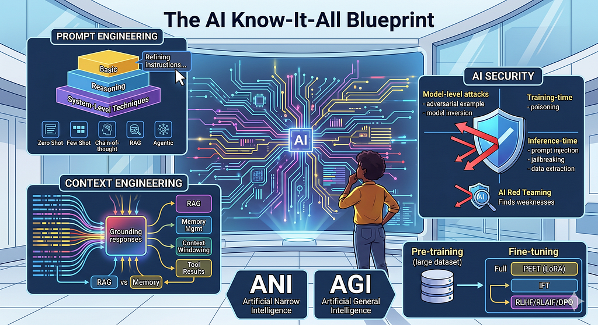

AI Terms
An Attempt to Know It All
By Arunkumar Velusamy · May 2026
When we read about AI topics, we realise we will never know them all. It is just overwhelming. This blog is just one of my many attempts to be a know-it-all.

An Attempt to Know It All
Prompt Engineering
Prompt engineering is the iterative process of refining instructions and context to guide an AI model toward the most accurate, relevant, and high-quality output. Main prompting strategies are,
- Zero Shot Prompting — just an instruction, no examples
- Few Shot Prompting — 2–5 examples before your question
- Chain-of-thought (CoT) — ask the model to reason step by step
- Role/persona prompting — “Act as an expert in…”
- System prompting — persistent instructions set before the conversation
- Self-consistency — sample multiple answers, pick the best
- ReAct / agentic — reason + act in a loop using tools
- Tree of thought — explore multiple reasoning branches, not just one chain
- Retrieval-augmented (RAG) — ground the prompt with retrieved documents or data
- Least-to-most prompting — break a hard problem into sub-problems, solve in order
Prompt engineering is a broad field, and these strategies sit at different levels:
Basic techniques: zero-shot prompting, few-shot prompting, role prompting, system prompting. These are the building blocks most people start with.
Reasoning techniques — chain-of-thought, tree of thought, least-to-most. These specifically target how the model thinks through problems.
System-level techniques — RAG, ReAct/agentic, self-consistency. These go beyond a single prompt and involve architecture, tools, or multiple model calls.
Context Engineering
Context engineering is the strategic practice of providing an AI with relevant background, constraints, and data to ensure its responses are grounded in a specific reality rather than general patterns.
While “prompting” is the instruction (the what), “context engineering” is the environment (the where, why, and how).
Here are the main techniques,
- RAG (Retrieval-Augmented Generation) — dynamically inject relevant documents into context at query time
- Memory management — decide what to keep, summarise, or drop as conversations grow long
- Context windowing — slide or truncate context strategically so the most relevant parts stay in view
- Tool/function results injection — pipe external data (APIs, databases, search) into context mid-conversation
- Conversation history pruning — compress old turns to free up space without losing meaning
- Structured context formatting — organise context with clear delimiters, XML tags, or headers so the model can navigate it better
- Multi-agent context passing — control what one agent hands off to another in a pipeline
- Persona/role context layering — combining system prompt + user history + task context into a coherent whole
AI Security
AI Security covers threats and defences specific to AI/ML systems. It has a few distinct subfields:
Model-level attacks — Threats targeting the model itself
- Adversarial examples — inputs crafted to fool the model (e.g. an image that looks normal to humans but misclassifies)
- Model inversion — extracting training data from a model
- Model stealing — cloning a model through repeated queries
Training-time attacks — Threats during the training process
- Data poisoning — corrupting training data to manipulate model behaviour
- Backdoor attacks — embedding hidden triggers that cause specific malicious outputs
Inference-time attacks — Threats at the point of use
- Prompt injection — malicious instructions are hidden inside content that the model is asked to process — tricking it into ignoring its original instructions and doing something unintended.
- Jailbreaking — manipulating the model into bypassing safety guardrails
- Data extraction — coaxing the model to leak system prompts or training data
Agentic / system-level threats: Emerging area as AI takes real-world actions
- Indirect prompt injection in pipelines
- Privilege escalation via tool use
- Supply chain attacks on MCP servers or plugins
If you want to read more about security, you can read owasp llm top 10. But it is very dry & boring to start with. So I reached out to Claude/Gemini/ChatGPT to simplify them.
AI red teaming
AI red teaming is the practice of deliberately trying to break, trick, or misuse an AI system to find its weaknesses — before bad actors do.
Non-agentic generative AI
Non-agentic generative AI refers to AI systems that only respond — they take an input, generate an output, and stop. They don’t plan, take actions, use tools, or pursue goals across multiple steps.
ANI (Artificial Narrow Intelligence)
AI that is highly capable at one specific task or domain, but nothing beyond that.
AGI (Artificial General Intelligence)
AI that can perform any intellectual task a human can — reasoning, learning, and adapting across any domain without being specifically trained for it.
Pre-training
Pre-training is the first and largest phase of training an AI model — where it learns from a massive dataset (billions of web pages, books, code, etc.) to develop general knowledge and language understanding, before any fine-tuning happens.
Fine-tuning
Fine-tuning is taking a pre-trained model and continuing to train it on a smaller, specific dataset so it gets better at a particular task, domain, or behaviour — without starting from scratch.
- Full fine-tuning — update every parameter in the model on new data. Most powerful, most expensive.
- PEFT (Parameter-Efficient Fine-Tuning) — only train a small fraction of parameters (e.g. LoRA adapters) while freezing the rest. Efficient and cheap. LoRA, QLoRA, Adapters, Prefix tuning, etc.
- IFT (Instruction fine-tuning) — train on (instruction → response) pairs to make the model better at following directions. How base models become assistants.
- RLHF (Reinforcement Learning from Human Feedback) — humans rate which responses are better, then use that signal to train the model via reinforcement learning. Used for alignment.
- RLAIF (RL from AI Feedback) — same as RLHF, but an AI rates the responses instead of humans. Cheaper and more scalable.
- DPO (Direct Preference Optimisation) — a simpler alternative to RLHF that directly trains on (preferred vs rejected) response pairs without needing a separate reward model.
- Continual pre-training — keep running pre-training on new domain text (medical, legal, code) to teach the model a new domain entirely.
- Task-specific fine-tuning — fine-tune on labelled data for one specific task, like classification or NER. Classic approach with BERT-style models.